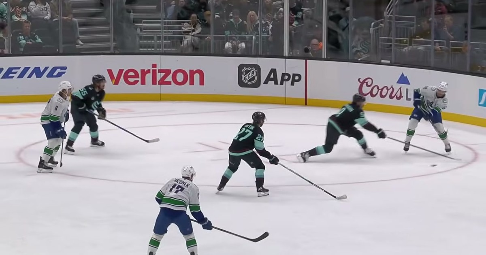

Berkly Catton's first career hat trick powers the Kraken past the Canucks 5-1
Berkly Catton scored in every period — a power-play one-timer, a steal-and-score, and an empty-netter — for his first career NHL hat trick as the Kraken beat the Canucks 5-1.

Disclosure: this post contains affiliate links. I earn a commission on qualifying purchases.
The night
Berkly Catton scored his first career NHL hat trick — a goal in every period — as the Seattle Kraken beat the Vancouver Canucks 5-1 at Climate Pledge Arena on Thursday night, snapping a three-game losing streak in their first game back from the Global Series trip to Helsinki.
Catton opened the scoring on the power play at 7:37 of the first, one-timing a Brandon Montour feed from the right dot over Leevi Merilainen's glove. He made it 3-1 at 8:54 of the second, stealing the puck from Linus Karlsson in the neutral zone and scoring unassisted, 54 seconds after Matty Beniers had restored the lead. And he completed it with 43 seconds left, taking a pass from Freddy Gaudreau — who passed up the easy empty-netter himself to set up the milestone — and snapping it home for the 5-1 final.
Catton finished with three goals on four shots in 15:17 of ice time. At 20 years and 310 days old, he is the youngest player in Kraken history to record a hat trick, eclipsing Jared McCann, who was 26 years and 228 days when he did it on January 14, 2023. Catton is the fifth Kraken player ever with a hat trick, joining Jordan Eberle, McCann, Montour and Jaden Schwartz.
The season he's having
The hat trick pushed Catton to eight goals on the season — already past the seven he scored in 66 games as a rookie last year — with 17 points in 19 games. He's on pace for 35 goals.
That pace is the story now. A year ago he was a rookie finding his way; this season he's the Kraken's breakout, scoring in every kind of situation — power play, off a steal, into an empty net — and doing it on a night when Seattle needed a response after a difficult trip to Finland.
The game around him
Seattle overwhelmed Vancouver from the opening faceoff, finishing with 43 shots on goal — tied for the fifth-highest single-game total in franchise history — including 24 in the first period alone, a franchise record for one period. Beniers had a goal and an assist, with his second-period goal standing as the game-winner, and Jordan Eberle scored on the power play in the third, four points away from 800 for his career. Montour had two assists. Philipp Grubauer made 22 saves.
Jake DeBrusk scored Vancouver's only goal, on the power play in the first period, with an assist from Brock Boeser that extended Boeser's point streak to nine games.
What it means
A first hat trick is a milestone by itself. Doing it as the youngest in franchise history, in the first game back from Helsinki, while snapping a losing streak, makes it a statement. Catton isn't just having a good sophomore season — he's becoming the player the Kraken build around.
Up next: the Kraken host the Sharks on Saturday, November 21 at 10:00 PM ET.
Gear up: Fanatics